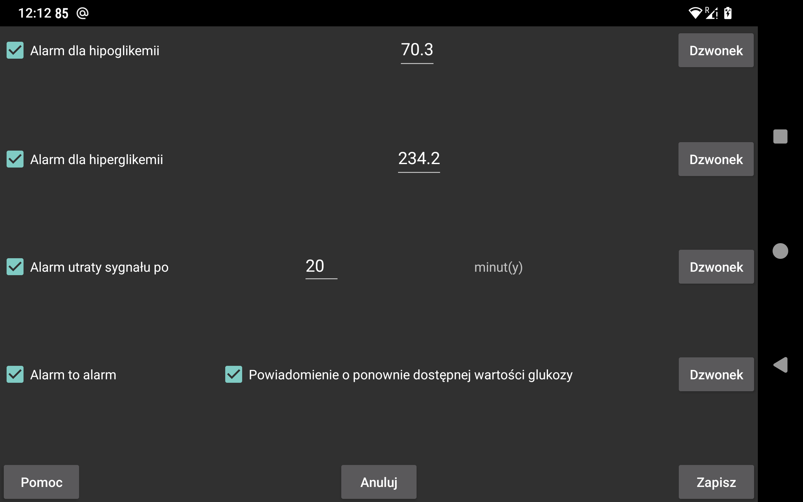

ar be de es fr hi it ja ko nl pl pt ru sv tr uk uz zh en
Wartości strumienia odbierane przez Bluetooth mogą być wykorzystane do ustawienia alarmów niskiego i wysokiego stężenia glukozy.
Wartość po osiągnięciu której i poniżej której powinien zadziałać alarm.
Wartość po osiągnięciu której i powyżej której powinien zadziałać alarm.
Określ, po ilu minutach ma się włączyć alarm, jeśli przez Bluetooth nie zostanie odebrana żadna wartość glukozy.
Alarmy zostaną zatrzymane, gdy spełniony zostanie jeden z poniższych warunków:
- Upłynął określony czas trwania;
- Dotknięty zostaje widok krzywej;
- Dotknięte zostaje powiadomienie Androida dot. Juggluco (w stanie odblokowanym);
- Dotknięty zostaje przycisk Anuluj w powiadomieniu o alarmie w Juggluco;
- Dotknięta zostaje Pływająca wart. glukozy.
Zdarza się, że sensor nie działa. Po włączeniu tej funkcji zostaniesz powiadomiony, gdy czujnik ponownie zadziała, ale tylko wtedy, gdy zobaczysz, że wartość nie jest dostępna w samej aplikacji Juggluco. Jeśli tylko wiesz, że wartość była niedostępna z powodu powiadomienia Juggluco lub tarczy zegarka Juggluco, nie zostanie wywołane powiadomienie o dostępnej wartości.
Dla każdego alarmu można określić, jaki dźwięk/(dzwonek) ma być odtwarzany i jak długo.
Po ustawieniu tej opcji, odtwarzany jest dźwięk/(dzwonek) dla alarmów niskiego poziomu, wysokiego poziomu i utraty sygnału w kategorii Alarmy systemu Android. Oznacza to, że w ustawieniach Androida jego głośność można ustawić w opcji zmiany poziomu głośności alarmów i nie jest wyciszana, gdy dźwięk całego telefonu jest wyłączony lub ustawiony na wibracje. Gdy opcja alarm to alarm nie jest włączona, używany jest poziom głośności dzwonka. Tak jest zawsze w przypadku powiadomienia o ponownie dostępnej wartości.